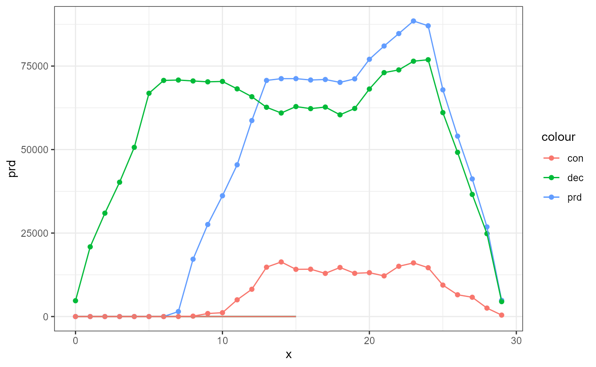

MinirhizotronR: Depth Resolved Analysis of Segmented Minirhizotron Scans
Source:vignettes/MinirhizotronR.Rmd
MinirhizotronR.RmdGuide on how to use this package:
MinirhizotronR picks up the work left behind after root scans have been segemented and root pixel, background pixel, and others have been identified. You will find some suggestions on how to get to that point below. We strongly recommend calibrating your tubes in-situ and note the insertion angle, tube diameter, and soil start in relation to where the scan starts for every tube (and perhaps timepoints if movment is expected). A calibration guide will follow at some point.
Installation
# devtools::install_github("jcunow/MinirhizotronR")
# remotes::install_github("jcunow/MinirhizotronR")Image stitching
If you have longer Minirhizotron tubes one scan doesn’t do the trick and you need to scan at several depths. In that case you’ll end up with a set of images for each tube at each time point. For our purposes, we might want to stitch them together to remove overlap. This will enable us to arrive at a quasi-continues depth distribution. Stitch before segmentation - you can find two solution to this here:
- Affine Keyfeature Stitching of all Scans corresponding to a particular Tube in Time; see Try AffineStitcher.py in StitchR repository. Works well for feature rich images with more overlap and less good for homogeneous images with little overlap. Limiting the key feature mapping to the overlap region should result in better results (not implemented yet!) https://github.com/jcunow/ImageStitching
- Use ImageJ’s Addon Stitcher. Needs a text file listing the rough Image positions (ca. 100px overlap). This has a high successrate but is time intensive.
AI Image segmentation
Image segmentation is critical for any further processing. There are several options available: Distinguishing between root and background is essential. Two potential choices:
-
“RootDetector” applied to stitched Images; This software will return a segmented and skeletonized Image with information stored in different channels. RootDetector allows to distinguish tape, roots, and background using the root identification method.
Peters et al. (2023) As good as but much more efficient and reproducible than human experts in detecting plant roots in minirhizotron images: The Convolution Neural Network RootDetector Scientific Reports 13 1,Using root tracking will return root production, root decay, and no-change roots. Using this unlocks a additional Turnover estimation - Turnover.DPC() Gillert et al. 2023, Tracking Growth and Decay of Plant Roots in Minirhizotron Images. IEEE/CVF Winter Conference on Applications of Computer Vision (WACV), https://doi.org/10.1109/WACV56688.2023.00369
Software at https://github.com/ExPlEcoGreifswald/RootDetector
-
“RootPainter” applied to stitched Images; This software returns a segmented Image.
Smith et al. 2022, RootPainter: deep learning segmentation of biological images with corrective annotation, New Phytologist 236 2, https://doi.org/10.1111/nph.18387Software at https://github.com/Abe404/root_painter
Tipp: split your stitched images if the root detection algorithm has trouble with the amount of roots of roots. You can rejoin the segmented images afterwards. But first, look if the settings can be changed to crank up the maximum root limit.
This is how a root stitched root scan may look like:
 After segmentation, we get pixel group information in different layers
looking somthing like this:
After segmentation, we get pixel group information in different layers
looking somthing like this:

For many purposes, we will need a skeleton version of the
segmentation:

Let’s look at example input
First, we need to load the images. The example images were taken in a sedge fen in north eastern Finland at Oulanka National Park.
library(MinirhizotronR)
library(dplyr)
library(terra)
# read color image, segmented, and skeletonized
data(rgb_Oulanka2023_Session03_T067)
data(seg_Oulanka2023_Session03_T067)
data(skl_Oulanka2023_Session01_T067)
data(skl_Oulanka2023_Session03_T067)
data(TurnoverDPC_data)
seg_Oulanka2023_Session03_T067 = terra::rast(seg_Oulanka2023_Session03_T067)
rgb_Oulanka2023_Session03_T067 = terra::rast(rgb_Oulanka2023_Session03_T067)
skl_Oulanka2023_Session01_T067 = terra::rast(skl_Oulanka2023_Session01_T067)
skl_Oulanka2023_Session03_T067 = terra::rast(skl_Oulanka2023_Session03_T067)
TurnoverDPC_data = terra::rast(TurnoverDPC_data)
#skl_Oulanka2023_Session03_T067 = (skeletonize(seg_Oulanka2023_Session03_T067[[2]], itr= 3))Calibration
It’s important to know how our scans relate to soil depth and where the tube upside face is located in the image. We assume that we don’t have in-situ calibration available. Instead, we are going to give our best guess on soil surface position and the rotation center position by using tape cover position as proxy.
### If you have measured the the distance from the soil to the edge of the tube - great, your job is done!
## Just do this:
height = 12 # cm
tilt = 45 # insertion angle
dpi = 150 # imiage resolution
# law of sines
radiant = pi/180
s0.true = (sin((90) * radiant)*height) / sin(tilt * radiant)
s0 = s0.true * dpi / 2.54
s0 = s0 %>% round()
### If you don't have any calibration data available - too bad!
## Try this instead:
# Based on Tape Cover, soil start is estimated
s0 = MinirhizotronR::SoilSurfE(rgb_Oulanka2023_Session03_T067)
print(paste0("Soil Surface Beginning in columns: ",s0$soil0))
#> [1] "Soil Surface Beginning in columns: 379"
# While we're at it, lets estimate the rotion center (Here, we assume that the tape extrusion on the upside of the Tube is perfectly centered - go and calibrate !!!)
r0 = MinirhizotronR::RotationE(rgb_Oulanka2023_Session03_T067)
print(paste0("Rotation Center in rows: ",r0))
#> [1] "Rotation Center in rows: 436.5"Depth Map
We are ready now to create a depth map. The here goal is to supply every pixel of the root scans with a depth information. We choose to include the tube thickness and thereby create a phase shifted cosine depth map - or ignore it (as traditionally done). Ignoring it will create a map in which the tube upside is located the same depth as tube downside (= vertical insertion angle).
## We want to exclude pixels with tape as part of the soil. Create a mask:
# The format of 'RootDetector' uses the red channel to show mask and root px, while blue and green only show root px
mask = (seg_Oulanka2023_Session03_T067[[1]] - seg_Oulanka2023_Session03_T067[[2]] ) / 255
mask = terra::t(mask)
## Create the Map
center.offset = r0 / dim(seg_Oulanka2023_Session03_T067)[1]
DepthMap = create.depthmap(im = seg_Oulanka2023_Session03_T067,
sinoid = TRUE,
mask = mask,start.soil = s0$soil0,
center.offset = center.offset )
# Now lets bin the depth to be able to calculate some stats. Analysis on continuous depth will feature in a future release.
# we use 5cm intervals here but any bandwidth can be used.
bm = MinirhizotronR::binning(DepthMap, nn = 2, "rounding")
terra::ext(bm) <- c(0,dim(bm)[2],0,dim(bm)[1])
# Binned Depthmap Plot
tbm = terra::t(bm)
terra::plot(tbm)
Extract Root Scape Features
With Depth Information ready, we can now analyze the data. Here, we are interested in 3 key features: Root Coverage, RootScapes Features, and Peat Characteristics. Let’s get to it:
# A good starting point is selecting the desired depth. Typically, you want to go through all depth to construct a depth distribution. For brevity, we show it for one depth here.
## We only need one binarized layer
# one layer gray would usually be a good option, however, there is distinct information stored in the various layers when using 'RootDetector'
gray.roots = rgb2gray(seg_Oulanka2023_Session03_T067)
# In this format, we can simply do this:
gray.roots = seg_Oulanka2023_Session03_T067[[2]]
terra::ext(gray.roots) <- c(0,dim(gray.roots)[2],0,dim(gray.roots)[1])
# extracts a depth band from the root image based on the depth map
rootzone = zone.fun(rootpic = gray.roots, binned.map = bm, indexD = -10, nn = 2 )
#> [1] "Depth: -10cm. Not enough informative pixels. In the whole Image, 100% are NAs after cutting this Depth Slice. Expected NA% is: ~93.33"
# the output message tells us the there are not enough proper values in the root zone. Lets try again
rootzone = zone.fun(rootpic = gray.roots, binned.map = bm, indexD = 8, nn = 2 )
terra::plot(rootzone)
# Also do it for the skeletonized version
rootzone.skeleton = zone.fun(skl_Oulanka2023_Session03_T067, binned.map = bm, indexD = 20, nn = 2)
terra::ext(rootzone.skeleton) <- c(0,dim(rootzone.skeleton)[2],0,dim(rootzone.skeleton)[1])
# Get the landscape metrics of the root scape - keep the output units in mind (assuming... input and deliver hectar output)
rsm = RootScapeMetrics(rootzone,indexD = 8, metrics = c( "lsm_c_ca","lsm_l_ent","lsm_c_pd",
"lsm_c_enn_mn"))
print(rsm)
#> # A tibble: 4 × 4
#> metric value object depth
#> <chr> <dbl> <chr> <dbl>
#> 1 ca 3.86 root 8
#> 2 enn_mn 2.05 root 8
#> 3 pd 4739. root 8
#> 4 ent 0.468 root 8Exctract Common Parameter
Get real numbers coverage numbers now
# Get number of Root pixel and Root Length, and Root Thickness
void = 255-(gray.roots)
# check if extent matches
# rotate if necessary
if(all(dim(bm)[1:2] != dim(gray.roots)[1:2])){
bm = terra::t(bm)
}
# retrieve the root pixel sum and the pixel without roots for all depths
void.sum = terra::zonal( void,bm, "sum" )
root.sum = terra::zonal(gray.roots,bm,"sum")
colnames(void.sum) <- c("zone","sum")
colnames(root.sum) <- c("zone","sum")
# if you want to include this function within a depth wise loop use this
rootpixel = px.sum(root.zone = rootzone) # uses the segmented - so its total root pixel
# for root length do something like this
kimroot = RootLength(rootzone.skeleton)
# lastly Root thickness
root.thicc = root.thickness(kimuralength = kimroot, rootpx = rootpixel, dpi = 150)
## report:
print(paste0("total root pixel in this depth: ",rootpixel," px"))
#> [1] "total root pixel in this depth: 38622 px"
print(paste0("total root length in this depth: ",kimroot," cm"))
#> [1] "total root length in this depth: NaN cm"
print(paste0("average root thickness in this depth: ",root.thicc," cm"))
#> [1] "average root thickness in this depth: NaN cm"Correct for Margins
OBS! not all depth have equal amount of tube surface to display roots! The end pieces of the tilted tube and partially tape covered tube have smaller tube surface
# correct for available space
av.space = root.sum + void.sum
av.space[,1] = av.space[,1]/2
plot(av.space) + title("total available rooting space")
#> integer(0)
rootpx_per_av.space = root.sum
rootpx_per_av.space[,2] = root.sum[,2] / av.space[,2]
df.rootpx_per_av.space = as.data.frame(rootpx_per_av.space)
ggplot(data=df.rootpx_per_av.space,aes(zone,sum)) + geom_point() + geom_smooth(span=0.25) + theme_classic() + ylab("% covered by roots") + xlab("Depth [cm]") +ggtitle("Roots per available rooting space")
#ggsave("C:/Users/jocu0013/Documents/GitHub/MinirhizotronR/figures/rootsperavailablespace.png") Rootsphere Influence
What if we want to consider a sphere of influence around the roots ?
## set hard limits
root.seg = gray.roots
terra::values(root.seg)[terra::values(terra::t(mask))==1] <- NA
# create a buffer around pixels (12 px == ca. 1mm), Rhizophere exudates 2mm (source)
buff.im = Halo(root.seg, width = 2, halo.only = FALSE)
terra::plot(buff.im, main= "The sphere of influence (roots + 0.3mm each side)") 
## lets do some stats on the sphere of influence
buffer.sum = terra::zonal( buff.im,bm, "sum",na.rm=TRUE )
plot(scale(buffer.sum)); points(scale(root.sum),col="red") + title("The difference between distribution of influence (black) vs distribution of rotos (red)")
#> integer(0)
# Hint: sphere of influence might not be the same across depth with varying physiology and hydraulic conductivityEstimate Soil Parameter
Can we characterize the Peat too ?
# only consider soil pixels - not tape nor roots
peat.color = terra::crop(rgb_Oulanka2023_Session03_T067,gray.roots)
terra::values(peat.color)[terra::values(buff.im) == 1] = NA
terra::values(peat.color)[terra::values(terra::t(mask)) == 1] = NA
# plot & color
terra::plotRGB(peat.color)
tube.color.peat = Tube.coloration(peat.color);tube.color.peat
#> rcc gcc bcc hue saturation luminosity red green
#> 1 0.4537 0.3038 0.2424 0.04923419 0.4441139 0.1709672 43.59664 29.95436
#> blue
#> 1 24.23477
# now only consider roots
root.color = terra::crop(rgb_Oulanka2023_Session03_T067,gray.roots)
terra::values(root.color)[terra::values(gray.roots) == 0] = NA
terra::values(root.color)[terra::values(terra::t(mask)) == 1] = NA
# plot & color
terra::plotRGB(root.color, main = "available root pixel") 
tube.color.root = Tube.coloration(root.color);tube.color.root
#> rcc gcc bcc hue saturation luminosity red green
#> 1 0.4126 0.3182 0.2692 0.05777937 0.3207919 0.2450358 62.48412 49.38863
#> blue
#> 1 42.43972
## Lets try to get texture information as well
gray.peat = raster::raster(rgb2gray(peat.color))
void.tx = glcm::glcm(gray.peat,n_grey = 7,window = c(9,9),
statistics = c("second_moment","homogeneity"),
shift=list(c(0,1), c(1,1), c(1,0), c(1,-1)))
#void.tx = terra::rast(void.tx)
terra::plot(void.tx[[1]], main = "available texture pixels and their second moment characteristic") 
## extent don't match
bm2 = raster::brick(bm)
terra::ext(bm) = terra::ext(void.tx)
tx.mean = terra::zonal(void.tx,bm2)
plot(tx.mean) + title("second moment - peat texture characterization")
#> integer(0)Rotational Bias
As the tube insertion angle increases, the more we expect a differences between the upside of the tube and the downside. Let’s estimate the rotational bias
# remove artefacts
root.seg.c = RotCensor(root.seg,fixed.width = 1000)
# lets make the split in 0.5 cm intervals
dpi = 150
splits = round(dim(root.seg)[1]/dpi*2.54) * 2
rot.df = data.frame(rotation = 1:splits,rotation.rootpx = NA)
for (k in 1:splits) {
rotation.z = zone.rotation.fun(rootpic = root.seg, mm= c(1500,4000), kk = splits, k = c(k-1,k))
rot.df[k,2] = px.sum(root.zone = rotation.z)
}
rot.df$sc.rotationpx = scale(rot.df$rotation.rootpx)
ggplot(data= rot.df, aes(rotation,sc.rotationpx)) +
geom_point() +
theme_bw() + xlab("rotation cm") + ylab("root px") +
geom_smooth(method="lm", formula = y ~ cos(x*pi/16),aes(color = "cosine fit")) +
geom_smooth(se=F,aes(color="local smooth"),span = 0.5)
## fit a sine curve to the rotation-sliced image
fitSinCurve(tt=rot.df$rotation,yy=rot.df$sc.rotationpx)
#> $amp
#> [1] 0.8639946
#>
#> $phase
#> [1] 11.30286
#>
#> $offset
#> [1] 0.1276436
#>
#> $peak
#> [1] -5.302862
#>
#> $A
#> [1] -0.8496447
#>
#> $B
#> [1] 0.1568139
#>
#> $tss
#> [1] 39
#>
#> $rss
#> [1] 25.45455
#>
#> $R2
#> [1] 0.3473193
# test if the variation in the data is 0 or explained by sine function alone
ryth.test = LR_rhythmicity(tt=rot.df$rotation,yy=rot.df$sc.rotationpx,period = splits-1, method = "LR")
splits - ryth.test$phase
#> [1] 8.535239
## if tow tubes are ought to be compared (different insertion angles or tube diameter)
tt1 = rot.df$rotation
tt2 = rot.df$rotation
yy1 = rot.df$sc.rotationpx
# amplitude 4x times as high
yy2 = rot.df$sc.rotationpx*2 + runif(length(rot.df$rotation),min = -0.1, max = 0.1 ) # + 20
WaldTest_diff_amp(tt1=tt1, yy1=yy1, tt2=tt2, yy2=yy2)
#> $amp_1
#> [1] 0.8639946
#>
#> $amp_2
#> [1] 1.728164
#>
#> $amp_c
#> [1] 1.027955
#>
#> $stat
#> [1] 4.195124
#>
#> $pvalue
#> [1] 0.05259289
## we can also test if if the rotational root distribution corresponds to the true tube upside
# rotation segments
terra::plot(root.seg) +
geom_hline(yintercept = seq(0,dim(root.seg)[1],length = splits+1),
color = "red",size=0.05,linetype = "solid") +
theme_void() +
geom_text(label = 1:20,aes(x=250,
y= (scale((seq(0,dim(root.seg)[1],
length = splits)))*
(sd((seq(0,dim(root.seg)[1]-(dim(root.seg)[1]/splits),
length =splits))))) +
mean((seq(0,dim(root.seg)[1],
length = splits)))),
color="black",size=1.5) 
#> NULL
#ggsave("C:/Users/jocu0013/Documents/GitHub/MinirhizotronR/figures/rotation_splicing.png")
# based on rotation center determined previously
df1 = seq(0*pi,-2*pi,-2*pi/(max(rot.df$rotation)-1))
calibrated.phase = (cos(df1+(pi*(1-center.offset))))*(6.35/2)
# test the rotational root distribution vs the calibrated
difftest = LRTest_diff_phase(tt1 = rot.df$rotation, tt2 = rot.df$rotation, yy1 = calibrated.phase, yy2 = rot.df$sc.rotationpx,
period = round(pi*6.35));difftest
#> $phase_1
#> [1] 8.843225
#>
#> $phase_2
#> [1] 5.711852
#>
#> $phase_c
#> [1] 5.782338
#>
#> $l0
#> [1] -71.01061
#>
#> $la
#> [1] -70.9955
#>
#> $stat
#> [1] 0.03021531
#>
#> $pvalue
#> [1] 0.867672
# tape estimation did not reflect the center of root distribution
## alternative polar plot
rot.df<-rot.df%>%
mutate(
# Use (rotation-0.5), not just id, to center label on each item
angle=90-360*(rotation-0.5)/max(rotation)
) %>%
mutate(exag.rootpx = rotation.rootpx**1.75)
ggplot(data= rot.df,
aes(rotation,exag.rootpx)) +
geom_bar(fill="indianred",
stat = "identity") +
geom_text(data=rot.df,
aes(y=max(exag.rootpx)-max(exag.rootpx)*0.925,label=rotation),hjust = 0.5, size = 3,color = "white")+
theme_minimal()+
ylab("")+xlab("")+
scale_y_continuous(breaks = c(-max(rot.df$exag.rootpx)*0.1),
labels = "",
limits = c(
-max(rot.df$exag.rootpx)/1.25,
max(rot.df$exag.rootpx)*1
))+
scale_x_continuous(labels = "",breaks = max(rot.df$exag.rootpx))+
coord_polar(start=(splits - ryth.test$phase )*1.15) ## Turnover Estimates Now its time for Turnover
## Turnover Estimates Now its time for Turnover
# the package offers two methods two estimate turnover.
#The function Turnover.TC() makes a comparison between two timepoints and determines production in relation to total biomass.
turn1 = Turnover.TC(skl_Oulanka2023_Session01_T067,skl_Oulanka2023_Session03_T067,method = "kimura");turn1
#> sum sum.1 sum.2 sum.3 sum.4
#> sum 1536.412 1492.178 -44.234 -0.0288 -0.0296
# PDC stands for production, decay, and constant - extracting the variables from a 'RootDetector' format turnover output
turn2 = Turnover.DPC(TurnoverDPC_data, product.layer = 2, decay.layer = 1);turn2
#> # A tibble: 1 × 7
#> tape constant production decay newgrowth.ratio decay.ratio constant.ratio
#> <dbl> <dbl> <dbl> <dbl> <dbl> <dbl> <dbl>
#> 1 887012 438681 2770138 3355722 0.863 0.884 0.0668
# we can also return production, decay, and constant layers instead and go apply depth stats
Turnmap = terra::rast(terra::as.array(TurnoverDPC_data)[,1:2000,])
turn3 = Turnover.DPC(Turnmap, im.return = T)
turn3$production = raster::brick(turn3$production)
turn3$constant = raster::brick(turn3$constant)
turn3$decay = raster::brick(turn3$decay)
# adapt depth map
mask = Turnmap != is.na(Turnmap)
bm.turn = create.depthmap(Turnmap,mask = mask,dpi = 150)
bm.turn2 =raster::brick(raster::t(bm.turn))
raster::extent(turn3$production) = raster::extent(bm.turn2)
raster::extent(turn3$decay) = raster::extent(bm.turn2)
raster::extent(turn3$constant) = raster::extent(bm.turn2)
prd = raster::zonal(turn3$production,bm.turn2,"sum")
dec = raster::zonal(turn3$decay,bm.turn2,"sum")
con = raster::zonal(turn3$constant,bm.turn2,"sum")
df = data.frame(prd = prd[,2],dec = dec[,2],con = con[,2], x = prd[,1], rootpx = root.sum[2:(length(prd[,1])+1),2])
ggplot(data=df,aes(x=x)) +
# scale_y_continuous(limits = c(0,1))+
# scale_x_continuous(limits = c(0,40))+
theme_bw()+
geom_point(aes(y = prd,color = "prd")) + geom_line(aes(y = prd/rootpx,color = "prd")) +
geom_point(aes(y = dec,color = "dec")) + geom_line(aes(y = dec/rootpx,color = "dec")) +
geom_point(aes(y = con,color = "con")) + geom_line(aes(y = con/rootpx,color = "con"))+
geom_line(aes(y = prd,color = "prd")) + geom_line(aes(y = prd/rootpx,color = "prd")) +
geom_line(aes(y = dec,color = "dec")) + geom_line(aes(y = dec/rootpx,color = "dec")) +
geom_line(aes(y = con,color = "con")) + geom_line(aes(y = con/rootpx,color = "con"))# + 
#geom_point(aes(y = rootpx,color = "rootpx")) + geom_line(aes(y = rootpx,color = "rootpx"))